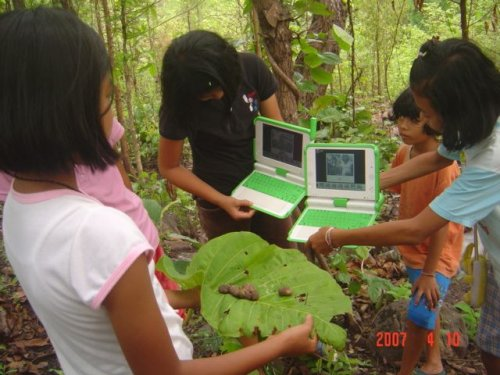

About this Manual¶
Introduction¶
The XO laptop is an educational tool designed to be put into the hands of every child. By using free and open source software and world-wide software development efforts. The OLPC project has been delivering XOs around the world, translated into multiple languages.
In a classroom in Peru¶
The XO runs free and open source software, Sugar, which allows anyone to run, copy, distribute, study, change and improve the software. Many people contributing to OLPC believe that these freedoms are critical to fulfilling OLPC’s educational goals.
When you open the XO, you will see the high-resolution, easy-to-read screen that works even in direct sunlight. You can also flip the XO into a book reader mode. The XO is designed to take outdoors and it even survives the rough-and-tumble daily lives that children lead.
We hope you learn more about the XO laptop by reading these pages, so that you can learn more with the XO laptop.

On a hike in Thailand¶